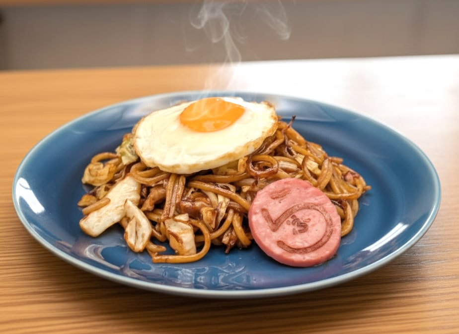

主役は
「茹で麺」
名古屋の製麺所「林製麺所」から届く茹で麺を使用。 一般的な蒸し麺では出せない、もちもちとした弾力と、 つるんとしたのど越しが、らふの焼きそばのいちばんの特徴です。
「午後からも、もうひと頑張り。」
気取らず、だけどちゃんと美味しい。
そんな一皿を、鶴里駅すぐの小さな店からお届けします。
名古屋の製麺所「林製麺所」から届く茹で麺を使用。 一般的な蒸し麺では出せない、もちもちとした弾力と、 つるんとしたのど越しが、らふの焼きそばのいちばんの特徴です。
席数はあえて8席だけ。 一皿一皿を目の前で丁寧に仕上げ、 おひとり様でも気軽に立ち寄れる、 サードプレイスのような空間を目指します。
名古屋市営地下鉄桜通線「鶴里駅」から徒歩1分。 ランチタイムにふらっと立ち寄れる 好アクセスが自慢です。 ビジネスランチにもどうぞ。
一皿で、気持ちが切り替わる焼きそばを作りたかった。
——だから、あえて茹で麺で。もちもちと、つるん。
ガツンと食べ応えはあるのに、後味は軽やか。
あなたの午後に、そっと寄り添う一皿です。

オープン準備の様子・メニュー情報は
公式Instagramで随時お知らせしています。
名古屋市営地下鉄桜通線「鶴里駅」から徒歩1分。
ふらっと立ち寄れる駅近立地です。
よくいただくご質問とお答えをまとめました。
ここにないご質問は、お気軽にお問い合わせください。
申し訳ありません、当店は先着順のみとさせていただいております。カウンター8席の小さなお店ですので、予約はお受けしておりません。 店内飲食は 11:00〜15:00（L.O. 15:00）、テイクアウトは 11:00〜17:00（L.O. 16:30・なくなり次第終了）。平日 11:00〜12:00／14:00〜15:00 は比較的ゆっくりお食事いただけます。15:00以降はテイクアウト専門となります。
スーパーなどで売られている一般的な焼きそば麺は「蒸し麺」です。らふではあえて茹で麺を使用しています。 蒸し麺よりももちもちした弾力と、つるんとしたのど越しが特徴で、ソースが麺にしっかり絡みます。 ぜひ食べ比べてみてください。
一部メニュー対応可です。特に「焼きそばパン（2個セット）」はテイクアウト専用メニューとしてご用意しております。 店頭での販売のみ、お電話での取り置きも可能です（052-746-6386）。
現在、提携駐車場を調整中です。お車でお越しの際は、お手数ですが近隣のコインパーキングをご利用ください。 鶴里駅徒歩1分の立地ですので、地下鉄でのご来店もぜひご検討ください。
はい、各種ご利用いただけます。 現金のほか、以下のキャッシュレス決済に対応します:
大歓迎です。カウンター8席のみの小さなお店なので、おひとり様のお客様が大半です。 「午後からも、もうひと頑張り。」——ビジネスランチ／お買い物の合間／ご近所からふらっと、どなたもお気軽にどうぞ。
お子様連れも歓迎です。ただしカウンター8席のみで通路が狭いため、ベビーカーでの入店はご相談ください。 お子様用の取り分け皿はご用意いたします。
小麦・卵・乳・牛肉・豚肉・大豆などを使用しております。 アレルギーをお持ちのお客様は、ご来店時にスタッフへお声がけください。できる限り対応させていただきますが、 共有の調理器具を使用しているため、コンタミネーション（混入）を完全に防ぐことはお約束できません。あらかじめご了承ください。
メニュー情報・オープン日程は、公式Instagramで随時お知らせします。
お問い合わせはメール・お電話でもお気軽に。
ご来店後、Google マップにひとことご感想いただけると嬉しいです。
Google マップに 口コミを書く※ 食べログは準備中／口コミ投稿は開店後（2026年5月7日以降）にご利用いただけます